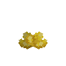
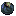
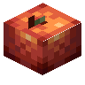

#c:foods
物品标签 · 73 个已收录成员
标签成员 (73)
 百香果馅饼
百香果馅饼atmospheric:passion_fruit_tart百香果冰糕
atmospheric:passion_fruit_sorbet
 糖渍橙子片
糖渍橙子片atmospheric:candied_orange_slices
 橙子布丁
橙子布丁atmospheric:orange_pudding
 橙子冰糕
橙子冰糕atmospheric:orange_sorbet
 醋栗杯状松糕
醋栗杯状松糕atmospheric:currant_muffin芦荟凝胶瓶
atmospheric:aloe_gel_bottle
 枫糖瓶
枫糖瓶autumnity:syrup_bottle椰子片
ecologics:coconut_slice核桃
ecologics:walnut

仙人掌果ecologics:prickly_pear熟仙人掌果
ecologics:cooked_prickly_pear
 蟹肉
蟹肉ecologics:crab_meat热带炖菜
ecologics:tropical_stew
 松露
松露environmental:truffle
 海铃脆片
海铃脆片eternal_starlight:jinglestem_crisp海铃三明治
eternal_starlight:jinglestem_sandwich晶壳麦饭团
eternal_starlight:crinoa_ball

焗黯影蜗牛eternal_starlight:shadow_escargot
 魔窟腐肉
魔窟腐肉eternal_starlight:doomeden_carrion腐烂火腿
eternal_starlight:rotten_ham
 Fried Egg
Fried Eggincubation:fried_egg熟鸡蛋
bountifulfares:cooked_egg
 煎蛋
煎蛋kaleidoscope_cookery:fried_egg
 Scrambled Eggs
Scrambled Eggsincubation:scrambled_eggs
 巧克力冰激凌
巧克力冰激凌neapolitan:chocolate_ice_cream
 香草冰激凌
香草冰激凌neapolitan:vanilla_ice_cream
 草莓冰激凌
草莓冰激凌neapolitan:strawberry_ice_cream香蕉冰激凌
neapolitan:banana_ice_cream薄荷冰激凌
neapolitan:mint_ice_cream红豆冰激凌
neapolitan:adzuki_ice_cream
 那不勒斯风味冰激凌
那不勒斯风味冰激凌neapolitan:neapolitan_ice_cream
 小冰块
小冰块neapolitan:ice_cubes白草莓
neapolitan:white_strawberries
 巧克力草莓
巧克力草莓neapolitan:chocolate_strawberries草莓司康饼
neapolitan:strawberry_scones
 香草荚干
香草荚干neapolitan:dried_vanilla_pods香草软糖
neapolitan:vanilla_fudge香草补丁
neapolitan:vanilla_pudding
 香蕉干
香蕉干neapolitan:dried_banana
 香草巧克力条
香草巧克力条neapolitan:vanilla_chocolate_fingers
 薄荷叶
薄荷叶neapolitan:mint_leaves
 烤红豆
烤红豆neapolitan:roasted_adzuki_beans
 红豆咖喱
红豆咖喱neapolitan:adzuki_curry
 蛋奶酒
蛋奶酒snowyspirit:eggnog
 姜饼曲奇
姜饼曲奇snowyspirit:gingerbread_cookie熟梭鱼草
upgrade_aquatic:boiled_pickerelweed
 桑葚果酱瓶
桑葚果酱瓶upgrade_aquatic:mulberry_jam_bottle樱桃
vinery:cherry樱桃
environmental:cherries
 接骨木莓
接骨木莓bountifulfares:elderberries
 海绵瓜片
海绵瓜片bountifulfares:spongekin_slice
 橙子
橙子bountifulfares:orange
 橙子
橙子atmospheric:orange
 柠檬
柠檬bountifulfares:lemon

血橙atmospheric:blood_orange
 橄榄
橄榄natures_spirit:olives朽老苹果
bountifulfares:hoary_apple
 半个椰子
半个椰子bountifulfares:coconut_half
 切半的椰子
切半的椰子natures_spirit:coconut_half
 百香果
百香果atmospheric:passion_fruit
 百香果
百香果bountifulfares:passion_fruit玉米面包
bountifulfares:maize_bread
 生羊排
生羊排kaleidoscope_cookery:raw_lamb_chops
 培根
培根farm_and_charm:bacon
 生五花肉
生五花肉kaleidoscope_cookery:raw_pork_belly
 熟远古兽肉
熟远古兽肉wan_ancient_beasts:cooked_ancient_meat
 生远古兽肉
生远古兽肉wan_ancient_beasts:raw_ancient_meat
 核桃
核桃bountifulfares:walnut
 核桃
核桃caupona:walnut
 番茄
番茄kaleidoscope_cookery:tomato
 沙漠芜菁
沙漠芜菁natures_spirit:desert_turnip
 韭葱
韭葱bountifulfares:leek
使用该标签的配方
无